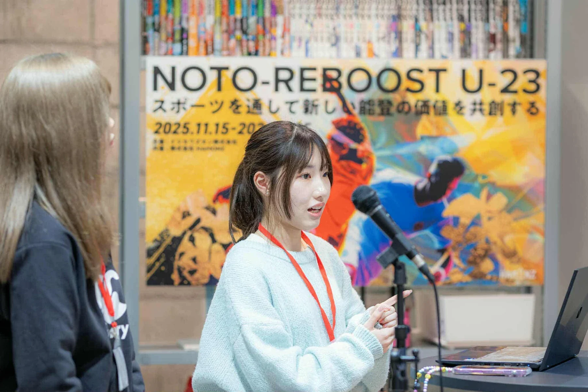

耕作放棄地の増加
高齢化や後継者不足により、手入れが難しい農地が増えています。
NOTO / SUZU, ISHIKAWA
学生・地域・企業が協力し、珠洲市の使われなくなった土地を、花と交流が生まれる場所へ再生するプロジェクトです。
9.20 SUN 泥ん子運動会の参加受付中 ↓

荒れ地を整えることは、花を咲かせることだけではない。地域に、新しい人の流れをつくること。
課題データを見る ↓THE CHALLENGE
耕作放棄地の増加は、景観の問題だけではありません。地域で顔を合わせる機会や、外から継続的に関わる人の流れも弱まりやすくなります。
NOTO Re:Bloomは、土地の再生を出発点に、世代や立場を超えて人が集う場を育てます。
高齢化や後継者不足により、手入れが難しい農地が増えています。
人口減少や生活環境の変化により、地域内外の交流機会が減っています。
能登の魅力に惹かれても、継続して関わる人や団体はまだ多くありません。
人と経済の循環が弱まり、未来への希望が見えにくくなっています。
WHY FARMLAND MATTERS
耕作放棄地は、ただ草が伸びた土地ではありません。そこにあった日常の景色、手を入れる人、地域で顔を合わせる理由まで、少しずつ見えにくくなってしまいます。
DATA / WHY NOW
耕作放棄地は、単に「草が生えた土地」ではありません。担い手の減少、災害による農地・水路の被害、そして再び人が関わり続ける仕組みの必要性が重なっています。ここでは、公的資料をもとに、プロジェクトの背景を可視化します。
全国の荒廃農地面積
通常の農作業では作物の栽培が困難な農地再生利用が可能と見込まれる荒廃農地
整地などにより、再び耕作できる可能性がある土地石川県の荒廃農地面積
調査未実施市町は直近の利用可能な数値を用いて集計奥能登の農業経営体
2015年比で33.6%減。震災前から担い手減少が続く数字を、単純な「増えた・減った」だけで見ないために。 全国の荒廃農地面積は近年25万ha台で推移していますが、なお9.8万haは再生利用が可能と見込まれています。加えて、令和3年調査から調査方法が見直されており、令和2年以前との単純比較はできません。
令和3年度以降は25万ha台で推移。面積が大きく減ったとは言い切れず、再生可能な土地をどう地域で使い続けるかが課題です。
※ 令和3年度の調査見直し後の推移を表示。農林水産省資料 ↗
全国の荒廃農地25.7万haのうち、9.8万haは整地などにより再び耕作できる可能性があると見込まれています。
※ 令和6年度・全国。農林水産省の定義に基づく分類です。
奥能登（輪島市・珠洲市・穴水町・能登町）の農業経営体は、2010年から2020年にかけておよそ半減しました。
※ 2020年農林業センサス。震災前の状況を示すデータです。石川県資料 ↗
2024年の地震・豪雨は、市街地だけでなく、農地・水路・ため池など生業を支える基盤にも大きな被害をもたらしました。
※ 査定件数は北陸農政局（2025年1月21日終了時点）。営農再開面積は農林水産省「令和6年度 食料・農業・農村白書」に基づく2024年の状況です。
WHAT THESE NUMBERS ASK OF US
だからこそ、整備して終わりにせず、次の使い手や関わり方を一緒につくる必要があります。
復旧だけでなく、地域の外からも継続して関わる人を増やすことが大切です。
土に触れ、笑い、また訪れる人が増える。その小さな循環を、私たちはつくります。
※ 石川県の令和6年度荒廃農地調査では、地震の影響で一部市町の現地調査が実施できず、直近の利用可能な年度の数値を用いて集計されています。数字は現場の全てを表すものではありませんが、課題と復興の背景を知るための入り口として掲載しています。
PROJECT SNAPSHOT
地域の現状と、私たちが2026年度に実現したい最初の一歩を、ひと目で見える形にしました。
珠洲市の人口
2026年5月31日現在
珠洲市の水田面積
2025年3月現在
初期土地整備費の概算
重機・整地・草木撤去等
再生モデル事業
成功事例をつくる
※ 人口は珠洲市「数字で見る珠洲市」、水田面積は石川県「水田の整備状況」による。初期土地整備費・目標はNOTO Re:Bloomの事業計画上の概算・計画です。
3-YEAR ROADMAP
最初の1か所目を確かな成功事例にし、地域・企業・学生が関わり続けるモデルを能登各地へ広げます。
REGENERATION MODEL
イベントだけで終わらせず、「農地再生 → 地域交流 → 景観資源化」の一連の流れをつくります。
農家・地域の方から相談を受け、土地の背景と可能性を知る。
草刈り・重機整備などを通じ、安全に活用できる状態へ戻す。
泥ん子運動会と未来の種まきを通じ、子ども・住民・学生が交わる時間をつくる。
花畑・撮影スポット・交流拠点として、地域に残る価値へ育てる。
さまざまな立場の人が、同じ土地の未来を一緒に考える。
THE PLACE / 現地のいま
現地で見たのは、ただ使われていない土地ではありません。次の季節を待つように、手入れと人の関わりを必要としている場所でした。だから私たちは、景色を変える前に、まずこの土地の声を聞くところから始めます。
山と畑が近く、地域の営みの中にある土地。

整地と安全確認を重ね、次の景色へつなげる。
写真：NOTO Re:Bloomメンバーによる現地撮影。候補地の状況は、地域・農家の方との調整を踏まえて進めます。
JOIN THE DAY
親子・学生・地域の仲間、参加歓迎2026.9.20 SUN
泥んこ Re:Bloom 運動会
& 未来の種まき
MUDDY, TOGETHER, BLOOM
初対面でも、親子でも、友人同士でも。年齢が偏らないチームで泥だらけになって挑戦し、最後にみんなで未来へつながる種をまきます。
チームでつなぐ、最初の一歩。
力を合わせて、ぐっと引く。
笑いながら、最後まで走る。
泥も気持ちも、みんなで運ぶ。
泥にまみれて笑った一日を、次の季節にまた訪れたくなる景色へつなげます。
※ 競技の形式・チーム編成は、参加人数・年齢構成・当日の土地状況を踏まえ、安全を最優先に調整します。

OUR START / 私たちの出発点
震災ボランティアとして何度も現地を訪れたメンバー。家族旅行で出会った能登の景色を、今も大切にしているメンバー。豪雨で泥にまみれた写真を洗い、地域の暮らしや記憶を守りたいと感じたメンバー。
生まれた場所も、住んでいる場所も異なる3人が、「復興の流れをもっと前へ進めたい」「スポーツの力で街をもっと元気にしたい」「貢献したいという想いを形にしたい」と集まりました。
復興を、元に戻すだけで終わらせない。
地域の内と外に、また会いたくなる関係をつくる。
土地と人が関わる理由を、次の世代へ残す。
挑戦は、たいてい泥臭いものです。だからこそ、学生のまっすぐな一歩が、能登をちょっと良くする最初の力になると信じています。
写真は、NOTO REBOOST U-23で構想を共有したときの記録です。私たちは、ここから珠洲の現地へ足を運び、プロジェクトを具体化してきました。
A DAY TO REMEMBER
Re:Bloomの日は、作業だけの日ではありません。土地に触れ、声をかけ合い、最後に未来へつながる種をまく。企業の皆様にも、地域と一緒に「変化の始まり」を体験していただけます。
安全に使える場所へ
みんなで一歩目をつくる。
泥スポーツで、世代や立場を
超えた交流が生まれる。
未来へつながる種をまき、
次に来る人へ景色を渡していく。
一日で終わらない、
地域との新しい関係が続く。
PARTNERSHIP
ご協力は、花畑をつくるだけではありません。荒れた土地を、人が集まり、地域の誇りになる場所へ変えていく力になります。サイト・現地看板・オリジナルTシャツ・活動報告書など、協賛内容に応じた形でご協力を見えるものにします。
PARTNER BENEFITS
掲載内容・実施時期は、協賛内容や制作の都合を確認のうえご相談します。
WHAT YOUR SUPPORT MAKES POSSIBLE
OUR PROMISE
私たちは、単発の協賛で終わらせず、現地に必要なことを一緒に考え、見える形でお返しします。
FIND YOUR ROLE
まずは、できそうなことをひとつ選んでみてください。内容が未定でも、現地の状況と照らし合わせて一緒に考えます。
MEDIA & PRESS
NOTO Re:Bloomでは、現地取材、プロジェクト紹介、学生・地域との協働に関する企画、活動の記録・発信を歓迎しています。
能登の土地が再び人の集まる場所へ変わっていく過程を、より多くの方に知っていただくことも、地域の未来を育てる大切な一歩だと考えています。
取材・掲載について相談する ↗フォームに「取材・メディアに関する相談」とご記入ください。内容を確認のうえ、メールでご返信します。
FUNDING PRIORITY
種まきや交流イベントの前に、荒れた土地を安全に活用できる状態へ戻す必要があります。現在、最優先で必要としているのが、初期の土地整備費です。
クラウドファンディングを見る ↗初期土地整備費の概算
※ 内訳は現地・正式見積もりの確定に応じて更新します。
A CONTINUING PROJECT
モデル事業として、土地再生と地域交流の成功事例をつくる。
協力者・協賛企業を広げ、珠洲市内で取り組みを拡大する。
地域ごとの想いをつなぎ、再生の仕組みを能登全体へ展開する。
FAQ FOR PARTNERS
具体的な協力方法が決まっていない段階でも、フォームからお気軽にご相談ください。
はい。必要に応じた重機・運搬・整地協力、資材・種・備品等のご提供、社員ボランティア参加、企業側での紹介・取材連携など、さまざまな形でのご協力を歓迎しています。協賛内容に応じて、Web・現地看板・オリジナルTシャツへの掲載もご相談いただけます。
もちろんです。現地で必要なことと、企業・団体様のご希望を伺いながら、協力の形を一緒に考えます。
実施内容や写真、今後の展望を活動報告として共有する予定です。協賛内容に応じたご報告方法もご相談いただけます。
クラウドファンディングは個人を含む幅広い支援の窓口、協賛・連携は企業・団体様との継続的な協力を相談する窓口です。
はい。現地取材、プロジェクト紹介、学生・地域との協働に関する企画などを歓迎しています。フォームに取材内容・ご希望の時期をご記入ください。
MATERIALS
企業・団体様へのご説明に使える資料を、Web上でもご覧いただけます。
1社の協力が、土地を整え、未来へつながる種をまき、地域の人がまた集まる理由になります。
まずは話を聞いてみる→CONTACT
協賛、必要に応じた重機・資材のご提供、社員参加、企業側での発信、取材・メディア連携などのご相談を受け付けています。フォームからお送りいただいた内容は、プロジェクト内で一元管理し、担当者よりメールでご返信します。